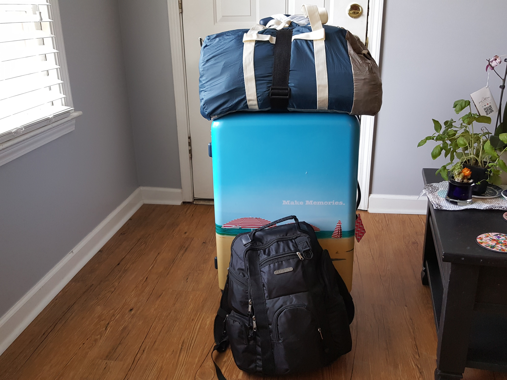

MY FAVORITE PLACES
I have traveled to seventeen countries and three continents. I believe that traveling is a great way to learn about different cultures and experience different points of view. Each place that I have traveled to has taught me so much about myself and life in general. Here are some of my favorite places to and why.
CHINA
I visited China in 2015 and loved it so much that I decided to move there. I enjoyed living there for 1.5 years. I learned a lot of the language and enjoyed the warm hospitality of the local people. I especially enjoyed the food. Sichuanese food is my absolute favorite!
PARIS, FRANCE
Who doesn't love Paris? Baugettes, chanmpagne, and the Eiffel Tower are just a few of the things that made my trip to the City of Lights tres parfait. Oh, and of course the world class food wasn't bad either.
OTHER PLACES THAT I LIKED
The aforementioned places were just two of my favorite destinations that I was blessed to visit. Here is a list of a few other places that have a place in my heart.
- Seoul, South Korea
- Bangkok, Thailand
- Dumaguete, Philippines
- London, United Kingdom
Would you love to travel the world too? I use this website to find great travel deals
Skyscanner